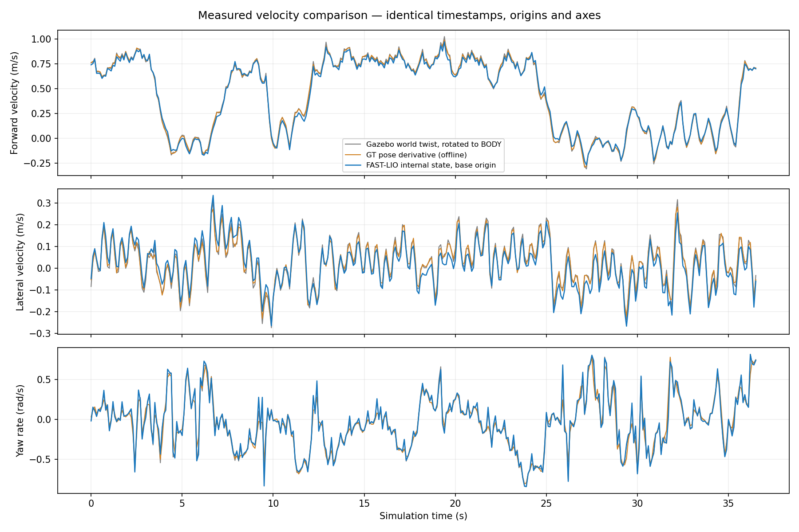
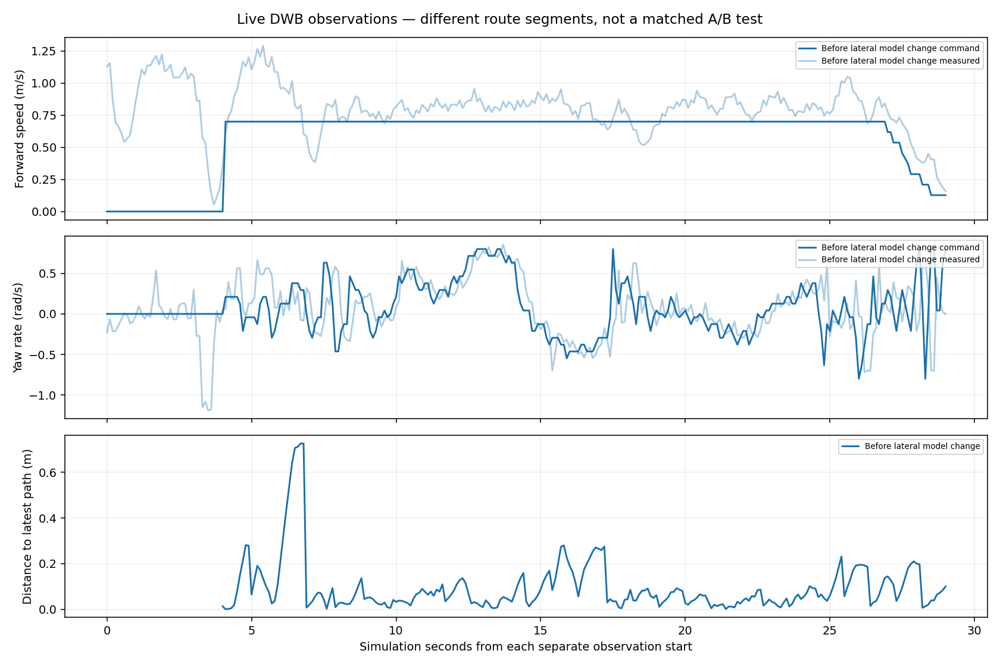

2026-10-27 · 사용자 실행 세션 · 관측 중 새 목표/수동 속도 명령 발행 없음
실제 속도 연결 확인 완료. controller_server의 odom_topic은 /legged/controller_odom이며, 동일 stamp의 adapter 출력은 독립적으로 계산한 몸체 축·원점 변환값과 일치합니다. 속도 정확도 확인이 코너 추종 문제 해결을 의미하지는 않습니다.
| 측정 항목 | 실주행 결과 |
|---|---|
| GT 동시 비교 | 366개 표본 / 36.50초 |
| 전진 속도 RMSE | 0.0236m/s |
| Yaw 속도 RMSE | 0.0344rad/s |
| Controller 입력 표본 나이 중앙값 / p95 | 0.100 / 0.102초 |
| 기록된 정책 입력 | NAV2 19211개 표본 |

첫 속도 기록의 DWB raw 명령 중 약 11.1%는 정지였고, vx>0.6m/s와 |yaw|>0.4rad/s를 동시에 요구한 명령은 약 13.8%였습니다. 이 비율은 수신 표본 비율이며 전체 임무의 시간 비율은 아닙니다. 그 후 별도 추종 기록에서 최신 수신 global path까지 거리는 중앙값 0.058m, p95 0.272m, 최대 0.727m였습니다. 재계획된 경로가 계속 바뀌므로 고정 기준 경로 대비 정확도 지표와 같지 않습니다. TF 나이는 약 0.2초여서 시간 정렬 오차도 포함됩니다.
controller 로그에는 No valid trajectories가 간헐적으로 나왔습니다. 별도 추종 기록에서는 Height planner의 grid path not found가 4회 관측됐고, watchdog은 safe_command_timeout으로 멈췄다가 pass로 복귀했습니다. 이 구간을 Collision Monitor만의 정지라고 단정할 수 없습니다.
기존 acc_lim_y=decel_lim_y=0에서 공식 StandardTrajectoryGenerator는 측정된 vy를 예측 구간 내내 유지합니다. 보행 흔들림 vy=0.1m/s라면 yaw=0에서 2초 후 0.2m의 옆 이동을 예측합니다. 새 입력을 0으로 지우는 대신, 목표 vy=0을 향해 감쇠하도록 trial 설정만 변경했습니다.
FollowPath.acc_lim_y: 0.0 → 0.5 FollowPath.decel_lim_y: 0.0 → -0.5 min_vel_y / max_vel_y: 0.0 유지 max_vel_x / max_speed_xy: 0.7 유지
실행 중인 controller에 두 값을 원자적으로 적용하고 readback을 확인했습니다. 설정 파일도 반영되어 다음 재시작부터 유지됩니다. 이는 sideways 주행 명령을 추가하지 않습니다. 예시 vy=0.1m/s는 0.2초 안에 0으로 감쇠하여, yaw=0일 때 연속시간 옆 변위는 약 0.01m입니다. 실제 DWB 적분은 timestep에 따라 다릅니다. 0.5는 시험 모델값이며 측정된 최대 가속도를 뜻하지 않습니다.
기록한 GT로 0.2초 뒤 vy를 예측했을 때 RMSE는 0.132→0.107m/s, 2초 뒤에는 0.133→0.107m/s였습니다. 보행의 주기성을 완전히 모델링하지는 않습니다. 이 결과만으로 장애물 회피/정지 빈도 개선이 검증됐다고 보지 않습니다.

최초 GT 속도 비교 기록은 NAV2 입력만 확인됐습니다. 이후 추종 기록은 simulator 로그에 JOYSTICK/NAV2 전환 이력이 있어 순수 자동 주행만의 성능으로 단정할 수 없습니다. 위 두 기록은 서로 다른 시각·경로 구간입니다. 동일 코너의 반복 시험이 아니므로 직접적인 성능 개선율을 계산하지 않습니다. 적용 후 관측 범위:
{
"samples": 0,
"warnings": {
"planner_server: Height plugin failed to plan calculation to (6.46, -9.68): \"Height planner: grid path not found\"": 29,
"planner_server: [compute_path_to_pose] [ActionServer] Aborting handle.": 29
}
}
같은 코너에서 진입 속도, 선회 시작 위치, 실제 yaw 응답과 경로 이탈을 반복 측정해야 합니다. 현재 변경은 일정한 코너 속도 상한을 강제하지 않습니다. 원복은 acc_lim_y와 decel_lim_y를 모두 0.0으로 되돌리는 것입니다. footprint, inflation, planner, Collision Monitor와 최고 속도는 이번에 변경하지 않았습니다.
Gazebo는 설치된 Livox 수정 라이브러리를 새로 매핑한 것을 확인했습니다. 이번 작업에서 시뮬레이터나 navigation 프로세스를 재시작하지 않았습니다.